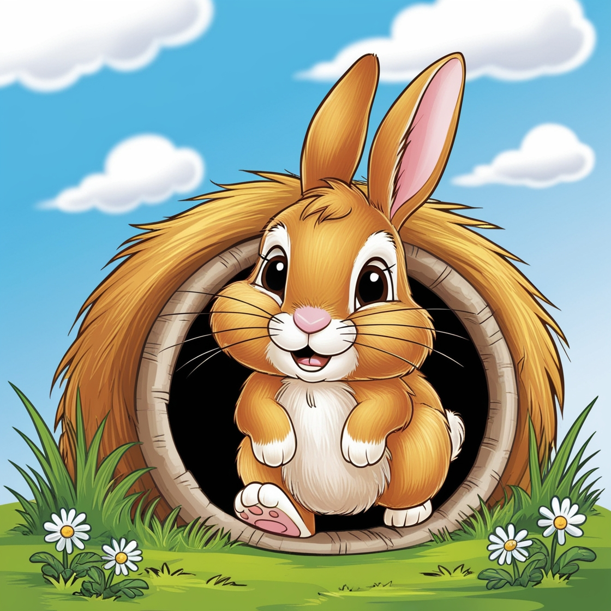

Toca do Coelho
Escola Infantil

Na Toca do Coelho, acreditamos que o desenvolvimento das crianças vai além da sala de aula. Por isso, oferecemos uma série de atividades extracurriculares que estimulam a criatividade, a saúde e a socialização. Entre elas, destacam-se Dança e Natação, duas atividades que promovem benefícios essenciais para o crescimento integral dos pequenos. A aula de dança é uma oportunidade única para que as crianças explorem a expressão corporal, criatividade e ritmo. Além de ser uma atividade divertida, a dança é fundamental para o desenvolvimento da coordenação motora, equilíbrio e autoconfiança. Benefícios da Dança: Coordenação motora: Movimentos que ajudam a fortalecer a agilidade e o controle corporal. Expressão emocional: A dança permite que as crianças expressem seus sentimentos de forma criativa. Socialização: As aulas em grupo ajudam a desenvolver habilidades de cooperação e trabalho em equipe. Disciplina e concentração: As coreografias ensinam foco e paciência, enquanto os pequenos aprendem a seguir instruções.
Na Toca do Coelho, o Tatame de Luta é uma atividade extracurricular que vai além do físico, promovendo o desenvolvimento integral das crianças. Durante as aulas de artes marciais, os alunos não só melhoram sua força e coordenação, mas também aprendem valores importantes como disciplina, respeito e autocontrole. O ambiente do tatame ensina a importância de seguir regras e respeitar o próximo, enquanto o progresso nas técnicas eleva a autoconfiança dos pequenos. Com um enfoque lúdico e seguro, essa atividade fortalece tanto o corpo quanto a mente, proporcionando aprendizado e diversão.


Na Toca do Coelho, a horta escolar é uma atividade que combina educação, diversão e contato direto com a natureza, oferecendo às crianças uma experiência rica em aprendizado prático. Cuidar da horta vai além de apenas plantar e colher; é uma forma de ensinar os alunos sobre o ciclo de vida das plantas, a importância de cuidar do meio ambiente e o valor da alimentação saudável. Durante as atividades na horta, as crianças aprendem sobre diversos tipos de vegetais, ervas e frutas, descobrindo como eles crescem e o que precisam para se desenvolver. Isso desperta nas crianças uma curiosidade natural, incentivando perguntas e reflexões sobre o mundo ao seu redor. O processo de preparar a terra, plantar as sementes e acompanhar o crescimento das plantas ensina lições importantes de paciência e responsabilidade, já que elas mesmas se tornam as cuidadoras do que plantaram. Além de todos esses benefícios educacionais, a horta também proporciona momentos de socialização. As crianças trabalham em grupo, aprendendo a colaborar e dividir tarefas, o que fortalece o senso de comunidade e cooperação. Juntos, eles discutem ideias, dividem responsabilidades e celebram os frutos do seu trabalho coletivo, o que enriquece tanto o aprendizado quanto as relações interpessoais.